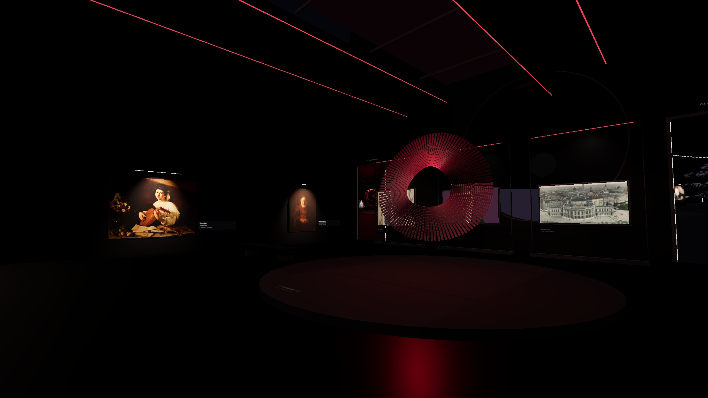
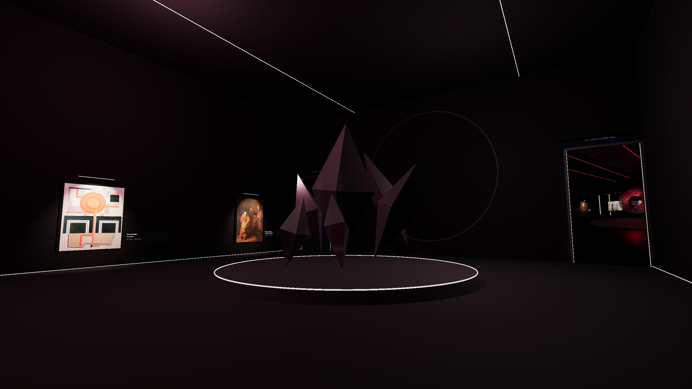
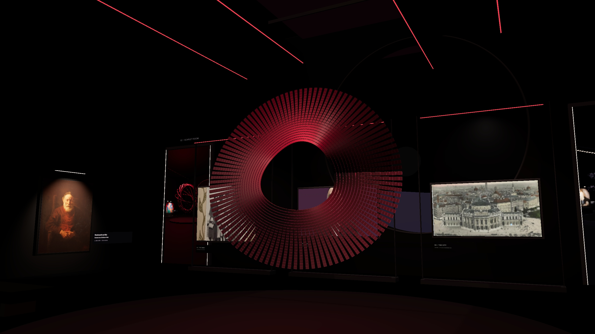
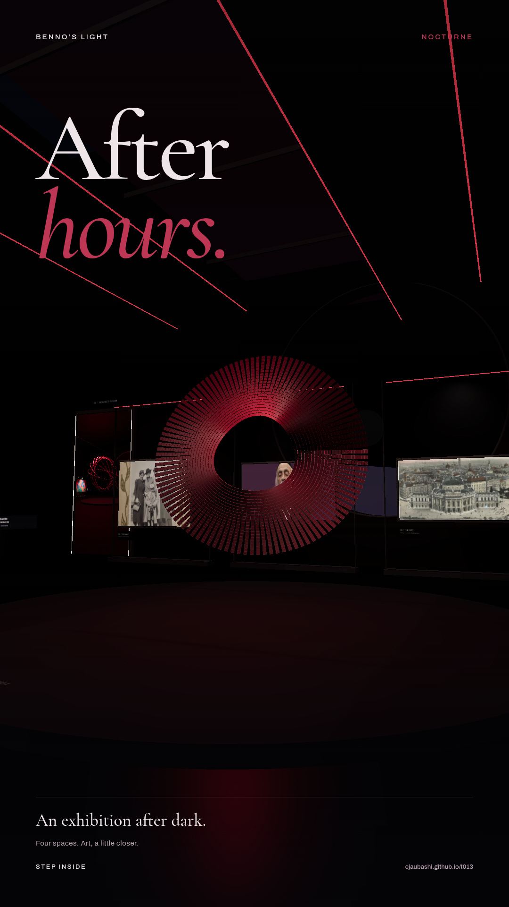

AN EXHIBITION AFTER DARK
After hours.
Four spaces. Art, a little closer.
Films, gallery stills, and covers ready to share.
Inside Nocturne.
Eight stills · 2560 × 1440 · Select to open







After hours, anywhere.
Feed and story covers · PNG
